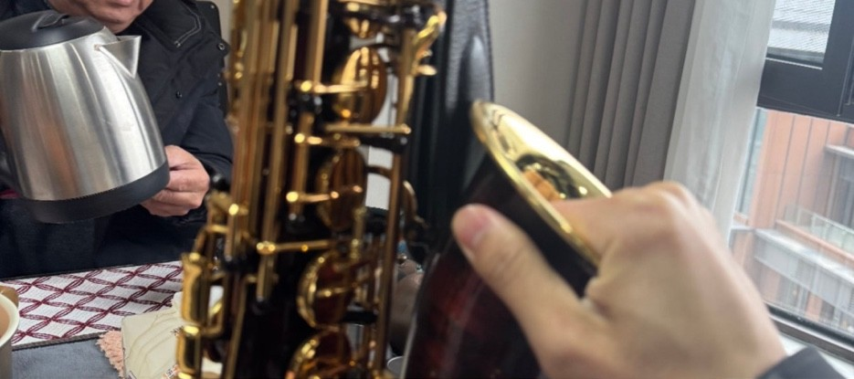
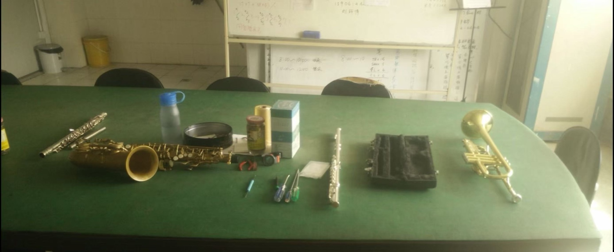

Exploring how centuries of instrument manufacturing craft knowledge can inform the design of tangible interfaces for quantum-computing aided musical expression.
Interdisciplinary arts-and-technology graduate with hands-on experience in instrument manufacturing, physical computing, service robot deployment, and AI-enabled media systems.
I grew up connected to the wind instrument manufacturing cluster in Taizhou, Jiangsu — China's largest — where I spent years doing hands-on work: saxophone key mechanism assembly, pad calibration, bore polishing, spring tension adjustment, and QC play-testing. I also play saxophone and electric guitar, trained across eight instruments from childhood.
Currently developing a research direction called "Quantum Luthierie" — investigating how embodied craft knowledge from traditional instrument making can be translated into design heuristics for tangible QAC interfaces.
Education
B.A. in Arts, Technology and Entertainment — Xi'an Jiaotong-Liverpool University (XJTLU), 2021–2025
M.M.S. — Duke University (currently on gap year), 2025–present
Investigating how the embodied craft knowledge accumulated in wind instrument manufacturing — the tacit understanding of how millimeter-level physical decisions shape playability, tonal response, and the performer's learning path — can be systematically extracted and formalized as design heuristics for tangible interfaces that make Quantum-computing Aided Composition (QAC) outputs physically intuitive for performers. Methodology combines auto-ethnography, practice-based research-through-design, physical prototyping (Arduino/ESP32, 3D printing), and progressive disclosure mechanisms grounded in Dreyfus's skill acquisition model.
↓ Download Research Proposal (PDF)Investigated sensing-informed adaptive assistance for musical skill development. Core design concept: "Scaffolding Fade-out" — adaptive assistance that progressively withdraws as the player develops independent musicianship. This work directly motivated the Quantum Luthierie direction.
Interactive VR musical instrument using Max/MSP integrated with Unity. Full-body gestures mapped to pitch, volume, and timbre via OSC protocol. Real-time parameter mapping directly relevant to tangible QAC interface design.
Experimental short film fusing DJI Air 3 drone cinematography with AI-generated video, rhythm-edited with original synthesizer soundtrack.
AI-generated narrative animation combining GPT-4o visual generation with original score composed in Cubase and Omnisphere.
Gesture-responsive audio interface: pressure sensors and accelerometer inputs mapped to Max/MSP synthesis parameters. Form factor iterated through 3D-printed enclosures.


Taizhou, Jiangsu is the heart of China's wind instrument manufacturing cluster. I spent my secondary school years at workshops here, gaining hands-on experience in saxophone key realignment and mechanism assembly, pad replacement and seating pressure calibration, bore polishing, reed selection and modification, bell flare shaping, spring tension adjustment, and final QC play-testing.
This dual background — as both maker and player — provides what Polanyi (1966) terms "tacit knowledge": embodied understanding of how millimeter-level physical design decisions shape playability, tonal response, and the player's learning path. It is the empirical foundation for the "Quantum Luthierie" research direction.